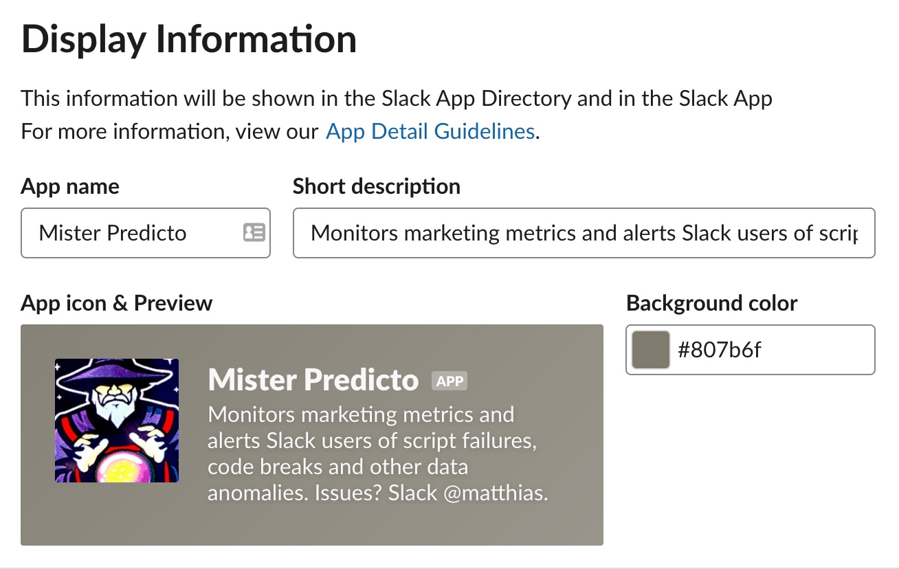
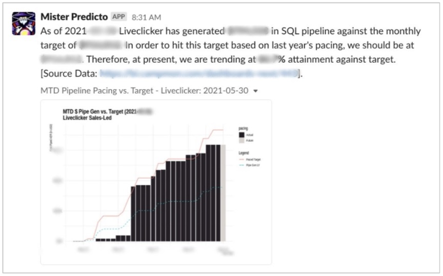

2021-08-10
This is a guest post by Matthias Mueller, Director of Marketing Analytics at CM Group. Matthias oversees a team of data scientists, engineers, and analysts tasked with optimizing the marketing mix, building customer lifetime value models, and enhancing the prospect’s buying journey.
As a global Marketing Technology company, CM Group and its family of brands generate countless data points that from an analytics perspective are a true treasure trove. Functioning as a de facto analytics agency to each of the brands under the CM Group umbrella, my team is tasked with analyzing, reporting on, and modeling these data, so that ultimately stakeholders across the organization can make data-driven decisions.
While having a plethora of data is a great position to be in, democratizing information across the business isn’t always easy. In fact, it is precisely this overabundance of data, and the sharing thereof, that can create challenges hampering growth in many organizations. Particularly,
So what can we do?
By using communication channels that are already used and available (Slack) in connection with R, Python and RStudio Connect, we built a system that serves custom, individualized insights directly to stakeholders, at the right time, where work already happens.
If we want to democratize data across the business, we need to find a way to serve insights to the stakeholders directly, in an easily digestible way.
Having bespoke analytics surfaced to you in an environment where you already talk about business performance allows my team to send insights without forcing you to leave the platform. It also democratizes the information with the stakeholders it is shared with: for example, I know that all marketing stakeholders will be in the #marketing channel, so I can push marketing analytics directly into that channel and spur immediate discussion. Naturally, I could curate different slack notifications for different channels; perhaps #marketing is interested in lead volume, while our internal team channel #marketing-analytics would be a good place to surface code breakages, etc.

Data Process
The process is simple: our data is centralized inside of an AWS Redshift instance, from which we pull whatever data set we are interested in using either an R or Python script and SQL. Then, after whatever analysis has been performed, we are pushing that insight into Slack using Slack’s API and the httr package. Utilizing RStudio Connect, we can then schedule that process at whatever cadence we need it to run to programmatically serve insights to stakeholders. Once the bot is established, the possibilities of use are virtually limitless. At CM Group, we have successfully implemented this process for many different purposes, including, but not limited to,
In the example of anomaly detection for lead volume of specific lead sources, the use of the Slack bot allows our marketing team to quickly gauge performance and determine if any action needs to be taken. In this case, it took just 7 minutes for people to start talking about what was going on as compared to sending out a dashboard or report.

In summary, this is a win-win situation for the organization and the analytics team:
For the organization: Serving stakeholders data in the moment they need it in a fully automated manner has transformed our organization into a more data-driven one. Utilizing this process, we are able to reach both technical and non-technical marketers, and make sure they are armed with all the data they need to make savvy decisions.
For the analytics team: As a lean analytics team, bandwidth is one of our biggest challenges. Building this process has helped us avoid/deprecate many redundant reporting tasks, while democratizing data across the organization. With the time saved on reporting, we were able to re-allocate this to do even more impactful analyses.
I’ve included the full Q&A from the meetup below. We have paraphrased and distilled portions of the responses for brevity and narrative quality.
Does the Slack Bot need to be hosted somewhere?
No, essentially slack bots are hosted inside of Slack themselves, so you don’t need to find a hosting platform or server to make this work. It’s as easy as going to api.slack.com and setting up your own bot there which is already inside the realm of Slack. Think of the Slack bot itself as a mail man that you can ask to deliver a message for you inside of Slack. You’ll need to find a way to send the message, however the mail man is part of the Slack ecosystem already.
Are you running R in the cloud today? What does your workflow look like under the hood?
We do use RStudio Connect in the cloud today. What I love about it is that it has this thing called git-backed deployment. Basically, if some of the folks on my team write code in R that is productionalized, we are already on the version control system. We use GitHub for that and our RStudio Connect installation is hooking directly into that Git instance. What happens is that as soon as you deploy your code once in Rstudio Connect and that original link is active, anytime someone actually commits new code into Git, that is automatically recognized by RStudio Connect and it updates your production code. Ultimately, the data scientists can focus on writing code and pushing that to Git. The entire process of having to moonlight as an IT person to put something into production is taken away because that’s all handled by RStudio Connect.
Outside the use of Slack, how else do you use R on your team?
R in itself is inherent in most of the analytics that we do. We are writing a lot of our work in RMarkdown and leveraging parameterized RMarkdown to give people the reporting that they need. Also, when working on more advanced analytics problems, you really cannot get around using code-based solutions, so we use R (and Python) for things like forecasting, customer LTV models, multi-touch attribution and so on. Ultimately, it’s the primary analytics language that we use here aside from SQL and Python.
Do you now have to manage Slack Bot fatigue?
Ha, that is an interesting question. The quick answer is no. The longer answer is that I think there have been some things that we have set up and found that we probably had too often of a cadence for pushing those insights. If you bombard people with these notifications then they can also become something that you see in Slack everyday so you stop reading it. They ways that we have countered this is:
If there’s something with a high recurring cadence, someone really needs to convince me that there is a definite need for this script to execute this often. So we’re very careful with that.
Instead of posting generalized analytics to large groups, we’ve actually gone into more specific insights to teams that are interested in exactly that piece of information. For example, instead of posting something about paid search that is relevant to 3 people to a channel that has 600 people in it, we would post it to the smaller group that actually utilizes it and needs that data.
I’m interested in how many global emails your company might have and how “fresh” those emails are? Also, how does your team measure the value of an email address?
I know this is a bigger discussion, but the summary is two-fold. We actually sit on the acquisition marketing end, so when I reference the 180 billion emails - that is the emails that our customers are sending with our platforms. It’s an interesting problem from a data perspective because you don’t have that one-to-one relationship, it’s a many-to-one relationship where a prospect either converts into a lead or not. With an email, you know you can convert after getting one email or five emails or never. It’s an interesting data science problem, but I would love to chat about this more.
I think your Slack bot is brilliant but also seems like a “with great power comes great responsibility” situation. Has it lightened or increased your workload?
When I went through the win-win section in the end, it has definitely lightened the things that we used to have to do like the recurring reporting tasks that most analysts don’t love doing. It has increased our work in some ways, where other teams have realized how neat this is. We’ve gotten recognition internally and have been asked by teams outside of marketing to build them similar processes, which in my book is a good thing. I love collaborating with other teams.
I have an outdated Marketing Analytics book that touches on martech studies. Do you recommend any books or resources to learn applied marketing analytics in R?
I think some of the reasons why these Enterprise meetups and other talks are so important is because you can learn so much from the community and people that are actually doing it today. Full disclosure, I don’t think I’ve read a marketing analytics book in a long time. I think a lot of the underlying concepts that you deal with in marketing aren’t necessarily only used in marketing. I definitely subscribe to the thought that data science is a bit of a tool kit that you can apply to different disciplines. For example, my lead data scientist that works on lifetime value models and multi-touch attribution has a PHD in physics and came to us from doing neuroscience. I think it’s more so the concepts that you already know and work with on the data science basis that are translatable to the marketing discipline.
(Bryan Butler also shared that he found this book helpful: Discrete Data Analysis with R: Visualization and Modeling Techniques for Categorical and Count Data)
You made a great point about taking your organization in the direction of code-based solutions versus GUI-based solutions. This is something I’ve encountered a lot and am wondering if you have seen any good posts to help crystalize that?
I think it comes back to some of those issues we’ve discussed. I think there are use cases for both. It’s always this trade-off of where we feel like we need to be. If you just want to have a simple bar chart with revenue, maybe cut by a certain region, why not build that in a BI tool. There can be a benefit of having something that’s simple that more people can use.
With R, the power really comes with customizability. I enjoy having full control over what we build internally from the ground up. I like that with R you can amend it however you want to and I just don’t have the capability with a lot of the BI tools that are out there. The biggest benefit is really being able to reproduce work and change things on the fly. Although the initial set-up is why tools like Excel are so inherent, because there isn’t as great a learning curve in the beginning. I’ve found that if you go that route though, there comes a point where there’s a ceiling and you can’t go any further. That ceiling doesn’t exist in code-based solutions. I think about my earlier career and if I had used code-based solutions rather than a spreadsheet, I would have been able to have a lot less headache to say, update certain things. For me, the savings are not necessarily in the beginning. I think this is a greater discussion though that could warrant a whole talk about what the use cases are for using either.
Let’s keep the conversation going:
If you have follow-up questions, are interested in speaking at a future meetup, and/or would like to be a part of this R in Marketing Community, join us in the #chat-marketing channel of the R for Data Science Online Learning Community Slack.